La home con el navegador ampliado
Ampliar con Ctrl + no cambia la pantalla: deja menos sitio a la app. En tu pantalla, el 150 % deja una ventana de 1274 × 579 y el 175 %, de 1092 × 496. Lo medí del 110 al 200 % en tres pantallas (1366 × 768, 1536 × 864 y 1920 × 1080), en castellano e inglés, en los siete momentos de la home y con el Foco en marcha.
Ya montado: lo de dentro del aro escala con el aro
El aro se encogía y lo de dentro no: «Foco manual», «Bloque 1 de 9» y el botón cruzaban el trazo, y el ciclo o «Después: …» se salían por abajo. Ahora, cuando el aro es pequeño, todo lo de dentro se encoge con él y queda como a 100 %. A 100 % no cambia nada (lo he comparado medida a medida). Va con su prueba.
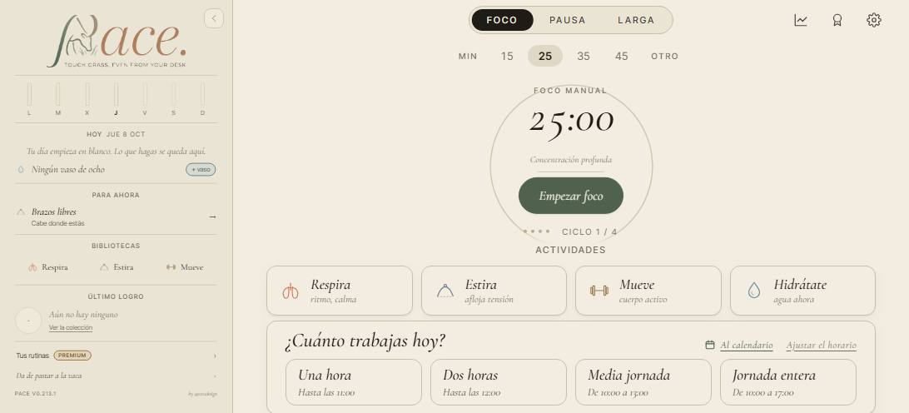
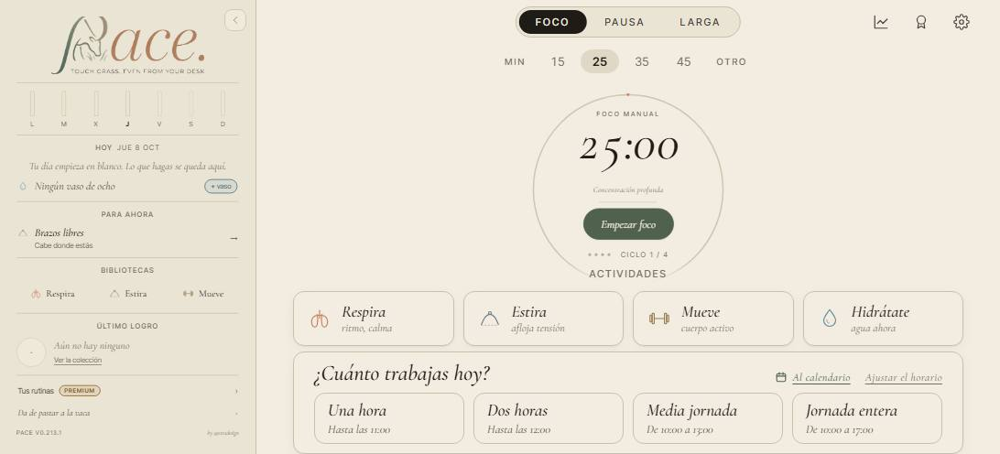
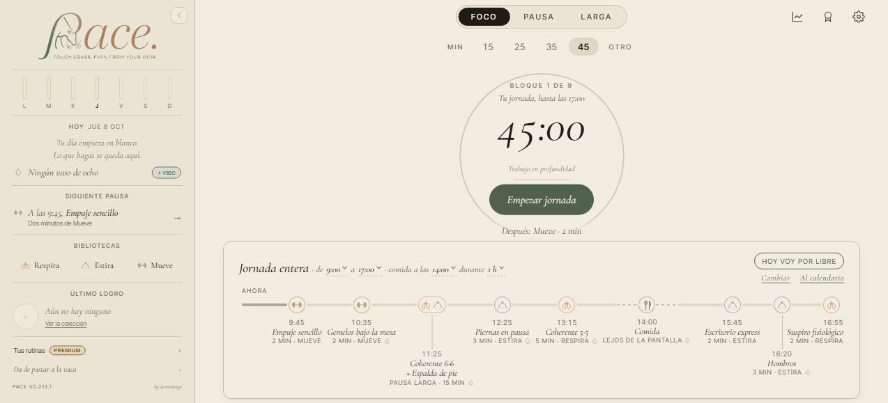
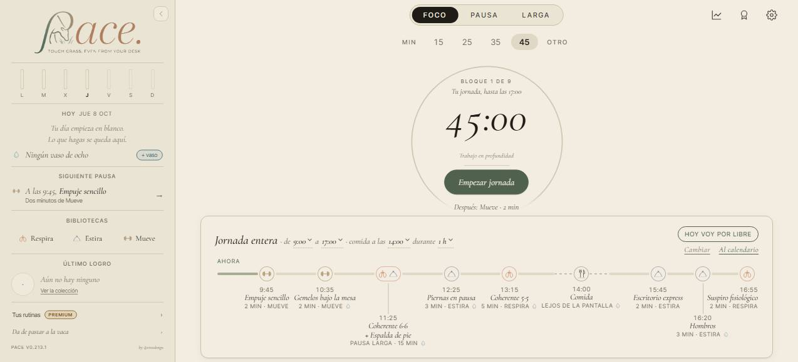
Hasta dónde aguanta ahora
| Pantalla | 110 % | 125 % | 150 % | 175 % | 200 % |
|---|---|---|---|---|---|
| 1920 × 1080 | bien | bien | bien | el día pide 33 px | 10-48 px |
| Tu pantalla (1911 × 868) | bien | bien | bien | el día pide 35-79 px | — |
| 1536 × 864 | bien | bien | el día pide 43-87 px | 100-178 px | piel de móvil, 250 px |
| 1366 × 768 | bien | el día pide 22-65 px | 94-151 px | 155-254 px | piel de móvil, 300 px |
«El día» es la tarjeta de la jornada con su línea de paradas: es lo más alto de la home, y es lo primero que no cabe. Con la tarjeta corta o por libre la home aguanta hasta unos 490 px de alto (el 175 % en tu pantalla). Por debajo de unos 430 px de alto (150 % en 1366, 175 % en 1366 y 1536) no cabe nada aunque se pliegue el día. Al 200 % en 1366 y 1536 la ventana mide menos de 769 de ancho y la app pasa a la piel de móvil.
Montada la A (elegida por Ez el 22 nov.)
La A está montada en la rama claude/youthful-turing-53d829: con el día servido, si la home no
cabe, la línea del día enseña solo la hora de cada parada; el nombre y los minutos siguen en su ficha al tocarla y
al pasar el ratón. Con sitio no cambia nada. Ya caben sin scroll tu pantalla al 175 %, 1536 al 150 %, 1920 al
175 % y 1366 al 125 %. Por debajo de unos 470 px de alto la línea se queda entera y se admite el scroll.
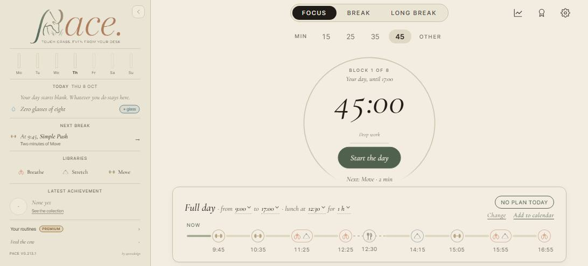
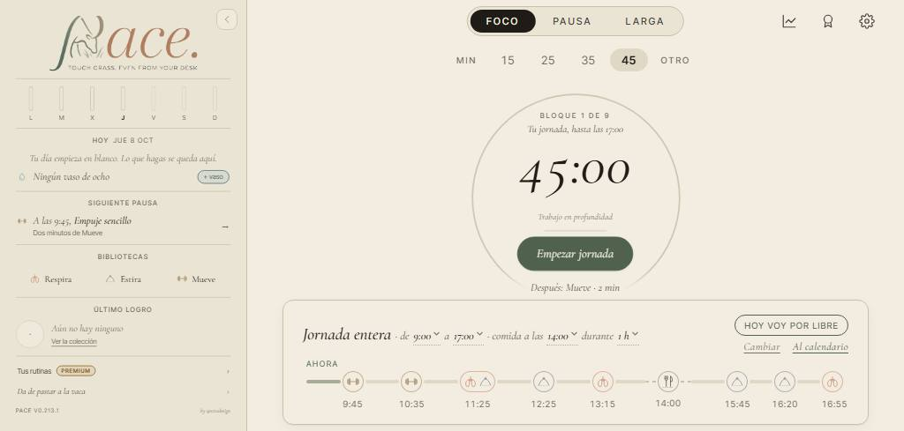
Lo que quedaba, y cambiaba lo que se ve: las tres opciones
Las tres, en tu pantalla al 175 % con el día servido. En las tres, lo de dentro del aro ya va arreglado.
AEl día en una fila (recomendada)
Si con el día servido la home no cabe, la línea del día enseña solo la hora de cada parada; el nombre y los minutos siguen al tocarla. Lo decide el motor midiendo, como en el móvil la B y la 1 A2 de la octava: con sitio, no cambia nada. Cabe al 175 % en tu pantalla y en 1920, y al 150 % en 1536.
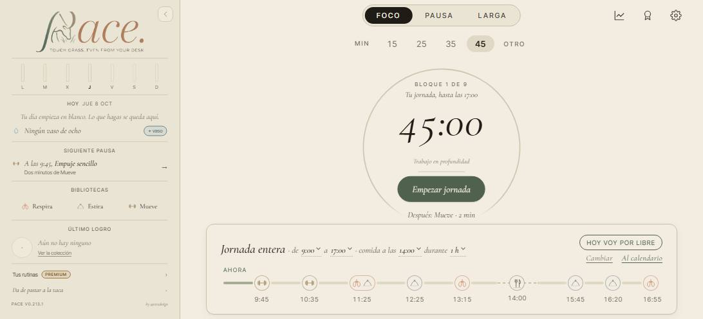
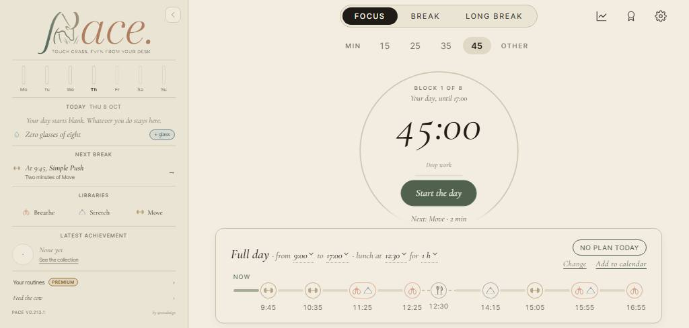
BEl aro a un lado
Con la ventana baja y ancha, el aro va a la izquierda, entero, y a la derecha la tarjeta del día (en su versión estrecha, «Ahora» y «Luego») o Actividades y la tarjeta corta. Cabe en más sitios con el día (también al 150 % en 1366), pero es otra home: el aro deja de salir como un sol por encima de las tarjetas. En la maqueta el selector de minutos aún se mete bajo la tarjeta en 1366; montada, se encogería.
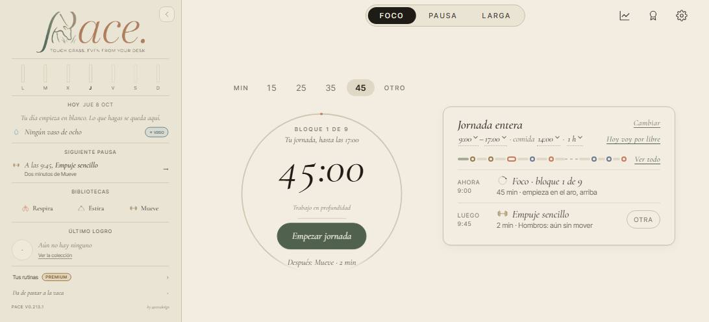
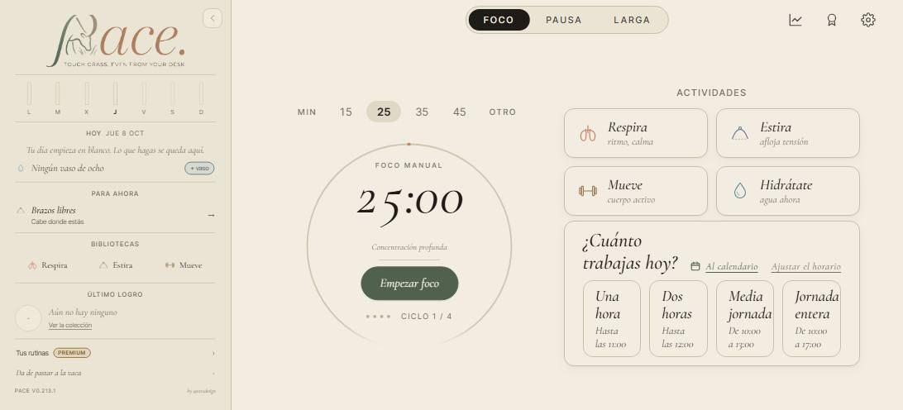
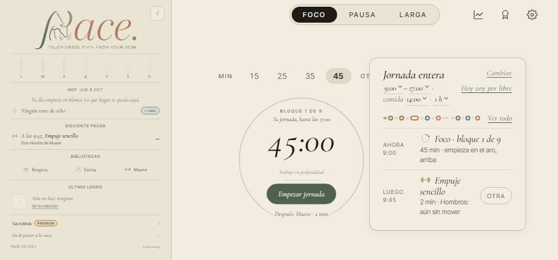
CComo queda hoy
Solo lo montado. Con el día servido, en ventanas de 490 a 540 px de alto la home pide de 33 a 87 px de scroll; con la tarjeta corta, nada hasta los 490.
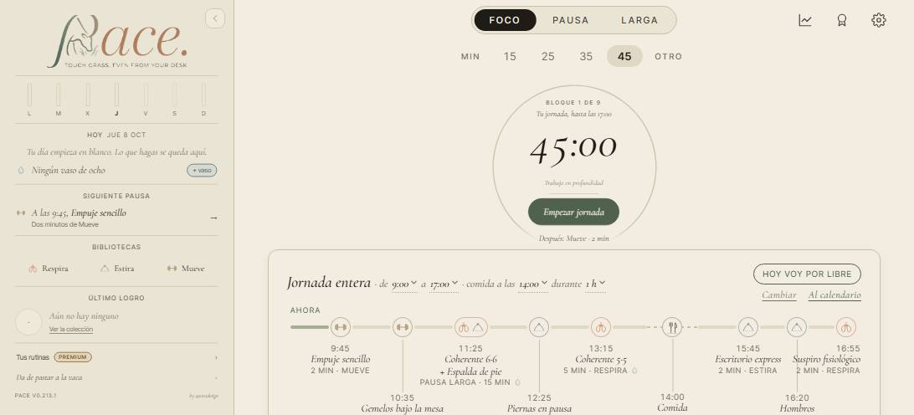
Y por debajo de unos 430 px de alto
Ni la A ni la B bastan: hace falta sitio para el aro, Actividades y la tarjeta. Recomiendo admitir ahí el scroll, como ya lo admites en el móvil a 320 × 568, y no encoger más el aro (con 205 de diámetro el número ya está en su mínimo legible). Lo que sí se podría probar después: plegar la barra lateral sola en esas ventanas, que libra 280 px de ancho pero ni un píxel de alto.
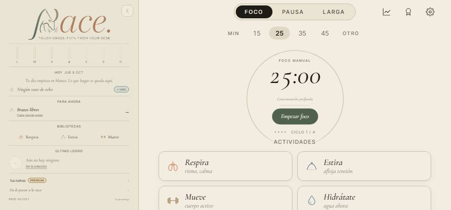
Mi recomendación
A, y scroll admitido por debajo de unos 430 px de alto. Es el cambio más pequeño, no toca la home de nadie con sitio y arregla tu 175 %. La B es más bonita en ventanas muy bajas, pero cambia la composición que elegiste.
Las maquetas son CSS encima de la app (a-dia-en-una-fila.css y b-aro-al-lado.css), medidas con scripts/audit/banco-zoom-home.js --css. Todas las medidas, en medidas-windows.md y medidas-linux.md (Linux, como Android: las mismas conclusiones, con unos píxeles de diferencia por la letra; la A cabe en los mismos sitios).